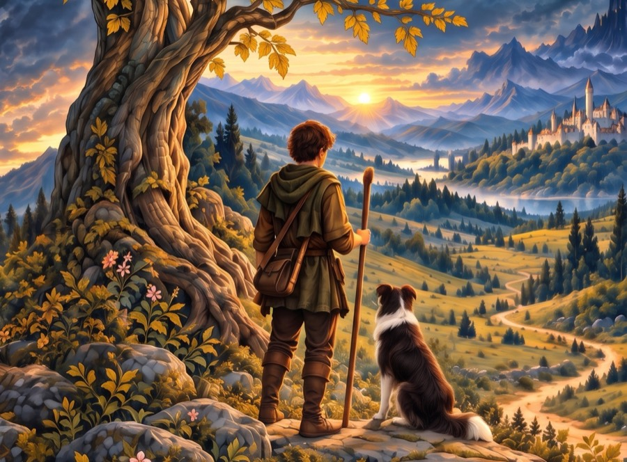
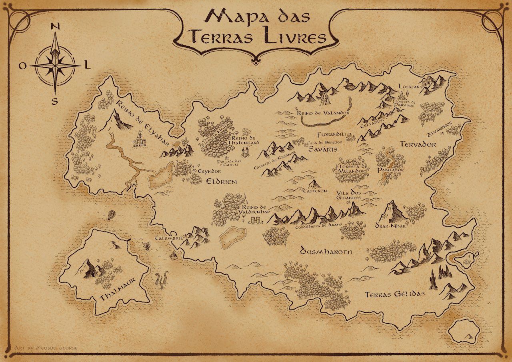
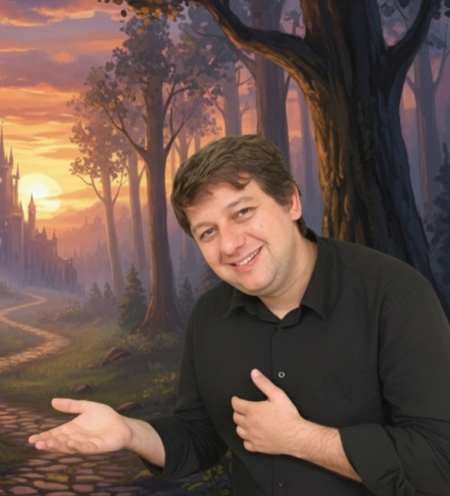

A Jornada de
Beregor e Guilberin
Contra o Senhor das Sombras
Uma fantasia épica brasileira no espírito de O Hobbit e Nárnia: reinos antigos, amizades postas à prova na estrada e a coragem de quem nunca pensou em ser herói.
Nota 5,0 dos leitores na Amazon
eBook Kindle R$ 16,80 · Livro impresso no Brasil a partir de R$ 63,78
Ele só queria cuidar
das ovelhas.

5,0 na Amazon
Nas verdes colinas de Saváris, onde a vida simples floresce entre ovelhas e canções de pastor, vive Beregor, um jovem de coração puro. Ao seu lado caminha Guilberin, o cão leal que nunca o deixa só.
Mas há um nome que o mundo julgava preso para sempre no fundo do Abismo: Hor. Passados mil anos, as correntes caem, e as hordas de Gorrmash começam a marchar contra os povos livres.
Quando uma vila arde no horizonte, Beregor deixa os campos e se junta a heróis de Valandor e de terras distantes. A estrada os leva por Pantador, onde as feras têm nome, pela Floresta Negra e pelas Sete Montanhas, até os portões fechados do Reino de Elyahar, onde talvez ainda exista socorro.
Entre batalhas, provações e perdas, nasce a história de uma amizade que desafia o medo, de um povo que se levanta contra a escuridão e da antiga luta entre a luz e as trevas.
Pois, muitas vezes, não são os poderosos que decidem o destino dos povos, mas aqueles cujo coração permanece fiel — ainda que venham das terras mais humildes.
Explore as Terras Livres
Reinos, povos e lugares de história antiga, de Elyahar, no extremo oeste, a Losafar, no extremo nordeste.

Beregor e Guilberin
Beregor é um jovem pastor de Saváris, com um cajado, um rebanho para cuidar e uma flauta de sabugueiro que ele mesmo cortou. Guilberin é o cão que guarda esse rebanho e não sai do lado dele. Pelo caminho, os dois vão descobrir que há neles mais do que imaginavam.
Mapa das Terras Livres
Saváris, Pantador, a Floresta Negra, as Sete Montanhas, Elyahar: veja no mapa por onde passa a jornada, das colinas onde Beregor pastoreia até os portões do extremo oeste.
Ver o mapa completoQuem cruza o caminho deles
Galdren, o mago, que costuma chegar antes de ser chamado.
Emoldor, o rei justo de Valandor, o maior reino de Saváris.
Bramil, Bhanun, Theor e outros guerreiros de Valandor e de terras distantes, que se juntam à jornada.
Robi, um menino de onze anos que pede, e pede de novo, para ir junto.
Elrin, elfa de Losafar, filha do rei Elendur, que se recusa a ficar atrás das muralhas.
Calenor, elfo arqueiro, de arco claro gravado de runas.
Hor, o Senhor das Sombras, mil anos preso no Abismo.
Os Gorrmash, orcs brutais, e seu chefe, Kharzug.
Os quatro Cavaleiros da Sombra, de branco, vermelho, negro e amarelo-doentio.
Rigar Rasmurien, o mago guardião de Pantador, e as feras sob sua guarda: Nharok, o felino de pelagem manchada; Ghalmuk, o crocodilo de couraça negra; e Urhass, a sucuri abissal.
E ainda reis, gigantes, elfos e os Celtarim, os Homens do Trovão e da Pedra.
Escolha sua edição
Impresso no Brasil ou digital, para começar a ler hoje mesmo.
Livro impresso · Clube de Autores
Edição nacional
R$ 63,78 + frete
- 394 páginas, formato A5 (14,8 × 21 cm)
- Papel pólen, bege, mais confortável para os olhos
- Brochura com orelhas
- Impresso e enviado no Brasil
Digital · Amazon
eBook Kindle
R$ 16,80
- Comece a ler logo após a compra
- No celular, tablet ou computador, com o app Kindle gratuito
- Ou direto no seu leitor Kindle
Mora fora do Brasil? A edição da Amazon, em capa comum ou capa dura (formato 6 × 9 polegadas), é impressa e enviada do exterior. Para quem está no Brasil, o preço e o prazo são maiores.
Ver na AmazonO pagamento é feito diretamente no Clube de Autores ou na Amazon.

Conheça o Autor
Nilson Mascolo Filho
Músico, escritor e artesão ítalo-brasileiro, Nilson Mascolo Filho une sua profunda sensibilidade artística a um amor incondicional pela literatura fantástica. Como autor de diversas obras, ele busca resgatar a nobreza e a magia clássica em cada narrativa.
Fortemente inspirado pelas obras de Tolkien e C. S. Lewis, ele escreveu A Jornada de Beregor e Guilberin como um verdadeiro legado literário. Mais do que contar uma história de guerra e magos, Nilson busca lembrar o leitor do poder indestrutível da amizade, da coragem e da esperança humana nos momentos de maior escuridão.